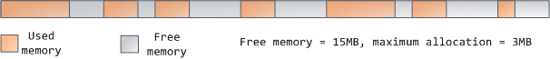
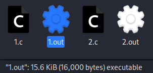

关于程序内存的一些研究
本文归档于 这里
最近计导课准备教关于指针的相关内容，但我对于程序在内存中的数据存储仍有些疑问，于是我进行了下面的研究。
内存管理是操作系统的核心，本文将从 Windows 和 Linux 系统下的程序在内存中的布局方式展开。
概述
多任务操作系统中的每个进程都在其自己的内存沙箱中运行。此沙箱是一块虚拟地址空间，在 32 位模式下始终是 4GB 内存地址块，而在 64 位模式下，虚拟地址空间的理论大小为 字节。
这些虚拟地址通过页表（page tables）映射到物理内存，页表由操作系统内核维护并由处理器查询。每个进程都有自己的一组页表，但必须为内核保留一部分虚拟地址空间：
在 Windows 情况下，默认将高地址的 2GB 空间分配给内核（当然也可以分配 1GB），而在 Linux 情况下，默认将高地址的 1GB 空间分配给内核，内核空间以外剩下的空间给用户使用也被称为用户空间。
![Kernel User Memory Split - From [2]](kernelUserMemorySplit.png)
这并不意味着内核需要使用那么多物理内存，只是它可以支配这么多物理内存。内核空间在页表中被标记为特权代码（privileged code）（R2 及以下）的专有空间，因此，如果用户层的程序尝试访问它，则会触发页错误（page fault）。在 Linux 中，内核空间始终存在，并在所有进程中映射相同的物理内存。内核代码和数据始终是可寻址的，随时准备处理中断或系统调用。相比之下，每当发生进程切换时，地址空间的用户模式部分的映射都会更改：
![Virtual Memory in Process Switch - From [2]](virtualMemoryInProcessSwitch.png)
蓝色区域表示映射到物理内存的虚拟地址，而白色区域表示未映射。在上面的例子中，Firefox 由于其对于内存的需求更大而使用了更多的虚拟地址空间。地址空间中的不同条带对应于堆、堆栈等内存段。以下是 Linux 进程中的标准段布局：
![Linux Flexible Address Space Layout - From [2]](linuxFlexibleAddressSpaceLayout.png)
如果计算机的每个进程精确地按照上面显示的段起始地址运行时，远程利用安全漏洞将变得非常容易，因此随机排布的地址空间逐渐变得流行起来。Linux 通过向堆栈、内存映射段和堆的起始地址添加偏移量使得地址空间变得随机。
栈 Stack
进程地址空间中最顶层的段是堆栈，大多数编程语言都使用它来存储局部变量和函数参数。调用一个方法（method）或函数（function）会将新的栈帧（stack frame）推送到堆栈上。当函数返回时，栈帧将被销毁。之所以这种简单的设计能够实现，是因为数据遵循严格的后进先出顺序，这意味着不需要复杂的数据结构来跟踪堆栈内容——一个简单的指向堆栈顶部的指针就可以了。因此，入栈（push）和出栈（pop）是非常快速和精确的。此外，堆栈区域的不断重用往往会将活动堆栈内存保留在 CPU 缓存中，从而加快访问速度。进程中的每个线程都有自己的堆栈。
通过不断地向堆栈中压入数据使其超过其容纳能力，可能会耗尽堆栈所对应的内存区域。这会触发一个页错误（page fault），并且由 Linux 中的 expand_stack() 进行处理，而 expand_stack() 又会调用 acct_stack_growth() 来检查是否适合扩展堆栈。如果堆栈大小低于 RLIMIT_STACK （通常为 8 MB），那么通常堆栈会增长，程序继续运行。但是，如果已达到最大堆栈大小，则会出现堆栈溢出，并且程序会收到段错误（Segmentation Fault）。虽然映射的堆栈区域会扩展以满足需求，但当堆栈变小时，映射的区域并不会缩小。
动态栈增长是访问未映射内存区域（如上文图中白色区域所示）可能唯一一种有效的情况。对未映射内存的任何其他访问都会触发由于段错误导致的页错误。除此之外，某些映射区域是只读的，因此对这些区域的写入尝试也会导致段错误。
内存映射段 Memory Mapping Segment
在堆栈下方，是内存映射段。在这里，内核将文件的内容直接映射到内存。内存映射是一种方便高效的文件 I/O 方式，因此可以将它用于加载动态库。也可以创建与不任何文件对应的匿名内存映射，用于程序数据。在 Linux 中，如果通过 malloc() 请求大块内存，C 运行库将创建这样的匿名映射，而不是使用堆内存。“大块”表示大于 MMAP_THRESHOLD 字节，默认为 128 kB，可通过 mallopt() 进行调整。
堆 Heap
接下来是堆。和栈一样，堆提供运行时内存分配。堆用于存储那些生存期与函数调用无关的数据。大部分语言都提供了堆管理功能。在C语言中，堆分配的接口是 malloc() 系列函数，而在具有垃圾收集功能的语言（如 C#）中，此接口是 new 关键字。
如果堆中有足够的空间来满足内存请求，则可以由语言在运行时处理该请求，而无需内核参与。否则，将会通过 brk() 系统调用（实现）扩大堆，为请求的内存块腾出空间。堆管理很复杂，需要复杂的算法来努力提高速度和高效的内存使用，以应对程序混乱的分配模式。为堆请求提供服务所需的时间可能会有很大差异。实时系统具有专用分配器来处理此问题。
堆也可能变得碎片化，如下所示：

BSS 段 BSS Segment
最后，我们进入内存的最底部的内存段：BSS 段、数据段和代码段。
在 C 语言中，BSS（Block Started by Symbol）段存储未初始化的静态（全局）变量的内容，其值不是由程序员在源代码中设置的。BSS 内存区域是匿名的：它不映射到任何文件。
数据段 Data Segment
数据段保存源代码中已初始化的静态（全局）变量的内容。此内存区域不是匿名的。它映射程序二进制映像的一部分，其中包含源代码中给出的初始静态值。尽管数据段映射了一个文件，但它是私有内存映射（private memory mapping），这意味着对内存的更新不会影响被映射的文件。
代码段 Text Segment（ELF）
代码段是只读的，保存了你全部的代码外加零零碎碎的东西，比如字符串值。代码段将你的二进制文件也映射到了内存中，但对此区域的写操作都会使你的程序收到段错误。这有助于防范指针错误，虽然不像在编程时就注意防范来得那么有效。
关于 BSS 段和数据段
以下有两段代码
1 | //1.c |
1 | //2.c |
进行编译后，我们发现：


第一段代码编译出来的可执行文件比第二段的小得多。
这是因为第一段代码全局变量没有初始化，保存在了 BSS 段，不需要占用可执行文件空间，因为其内容是由操作系统在程序运行时进行初始化；而第二段代码的全局变量的内容保存在了数据段，因此两段代码编译出的可执行文件大小不一样。
参考资料：
- 剖析程序的内存布局 https://zhuanlan.zhihu.com/p/98560503
- Anatomy of a Program in Memory https://manybutfinite.com/post/anatomy-of-a-program-in-memory/
- 你该知道你写的程序的内存布局 https://www.bilibili.com/read/cv18183122/
- C到C++的升级 http://t.zoukankan.com/songhe364826110-p-11517145.html